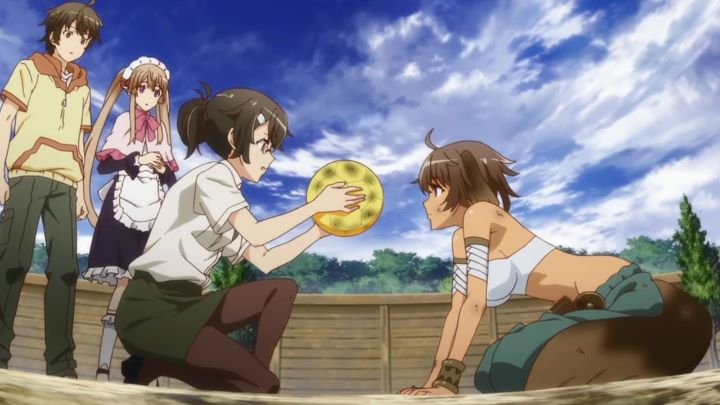

Disclaimer: Spoilers for the scenario of the ending.The biggest anime trend of the 2010's decade was "isekai," the concept of a modern-day teen beening transported to a fantasy world, inspired by video games or other generic anime. There's a lot of examples, most of them forgettable. "Outbreak Company" is one such early example, broadcast in 2013. It has some interesting ideas in it though, for better or for worse.Shinichi is an everyday NEET, a shut-in otaku who surrounds himself in video games, anime and manga. He happens to come across an online job application that claims to need exactly those skills. Unusual though it was, he takes and passes a rigorous online quiz to prove his knowledge of popular and niche franchises, and in a job interview, is drugged and passes out... when he wakes up, he's in a medival kingdom with creatures and magic sraight out of a "Final Fantasy" game. It is explained that this is a real, alternate universe, accessed by some wrap hole discovered in Japan. The government is secretly trying to work with the new kingdom, and part of their goal is to share Japan's culture as a sign of good faith and to foster good relations. What better content to share than anime, manga, and games, the stuff that worked so well in countries on Earth? In this new world, Shinichi has to adapt to the customs of the kingdom, but also share his knowledge as a government employee, ultimately creating a school to teach "otaku-culture." So yeah, despite the existance of dragons, princesses, elves and dwarves, there's no war or threat to be concerned with. It's a show about a government job, albiet a very unusual one. Shinichi tends to overreact to everything, be it seeing his personal maid for the first time (maids are common in the Kingdom), or how cute the young ruler princess is, and there's a bit of entertainment from that. Importing a mini library of manga and anime allows him to teach, and the topics to educate on are humorous in the moment: he initially tries to explain things like "moe," and the magic of showing stockings and a school-uniform miniskirt on anime-styled girls, while a normally serious co-worker tries to find opportunities to teach the concept of the "boys'-love" genre ("IT'S NOT HOMOSEXUALITY, CALL IT BL!!!" she exclaims). It's funny to see elvish students trying to argue about which PS-VITA visual novel is the best, or to see them attempt to create a fan-movie based on a manga, or to watch an assembly of wise advisors determine the best swimsuit design for the princess to wear for a "swimsuit episode." There are plenty of these smaller, clever moments that garner a chuckle, but it wasn't enough to make the show seem more than humdrum to watch through. Part of the issue is Princess Petralka herself, who is a bit of a brat, and the English dub actor for her makes her surpremely unlikable (for her specifically, watching the Japanese dub is highly recommended, making the character sound more cute and awkward rather than simply jealous and impatient). But there are other themes at play that make the show mrore intriging, and sometimes worse for it. For example, why is Japan explicitly trying to share their own culture, a small segment of modern-day Earth, it what appears to be a very narrow-minded and self-centered idea? Most of the Kingdom can't read at all, let alone the original Japanese text and language of the material... but why are they trying to teach everyone Japanese, instead of translating the content like they would in English countries, and teaching the native language to read? The Kingdom has clear and strict hierarchies of monarchy and peasent, master and servant, and racism between different races is commonplace; Shinichi doesn't want to allow this, but he's encouraged to not alter or force change in their long-standing traditions. In an early episode, there's a terrorist attack motivated due to stop Japan's culture sharing, out of fear that it would conflict and erase the Kingdom's own history (seeing this late in 2020, it's ominously relevant to the point of view of some Americans trying to justify racism). At risk of spoiling the story (although I don't think anyone would really watch this for the story), it's ultimately revealed that the Kingdom's residents at large begin to obsess over the otaku-media, exhausting themselves and not completing their regular work. All according to plan, to allow Japan to properly conquer the new land. It's a good plot twist, sure, but it only makes one further question whether the show was celebrating the content or criticizing it. Certainly, Western culture, food and religon has unfairly been propogated into other countries throughout history, especially American culture to Japan after World War II. Is "Outbreak Company" a big metaphor for that? Or is it specifically satirizing modern-day Japan, for successfully becoming predominant around the world for their animation and comics, encouraging obsessive and additictive behavior and consumer practices, at the expense of ignoring other traditional elements of Japanese and Asian culture? It makes a profit for local companies and encourages tourism to Japan, but was it dangerous to not predict the adverse effects? Personally having friends who primarily develop games or software, it's scary to think of how many of them learned Japanese as their only second language to speak and read, despite never having actually traveled to Japan, or properly understanding their history outside of anime, and how little interest they have in other countries or languages, let alone their own. Japan has won in the big war on entertainment, and even their own citizens seem to understand the implications (see Hayao Miyazaki's famous quote "anime was a mistake").  These are dark themes, and by the ending, I'd classify "Outbreak Company" as a surprisingly dark show. Or rather, simply too complex to have a place in what should be 100% a comedy, and it isn't handled in a satisfying manner for it to have been worthwhile. Perhaps one benefit would be for the average anime fan to have their eyes opened by paying attention to these themes. In all liklihood, they are already aware, and either choose not to or are unable to do anything about it. The anime also uses a ton of industry references, enough to give "Ready Player One" a run for its money. These come in the form of subtle camera shots and character poses, or dialogue choices, or just manga in the Kingdom's library or posters on the wall. About 90% of the references would have been missed by the average viewer, so Sentai Filmworks on their American Bluray decided to add subtitles to indicate any references when they appear; I'm glad they did, but they do pop up a lot. Of course, it would be a copyright issue if the show referenced real anime directly (although some future anime would, perphaps because the same production company owned the rights), so each manga volume and class taught maticulously changes the titles and character designs just slightly to avoid the issue, but not enough to prevent things being recognizable. One episode even seems to make clear the studio is aware of what they did, defining the difference between plagirism and homage. Regardless, it's a ton of work to copy dozens of other franchises like that and stay consistent within the show, so good on them.The production values are reasonable, with slightly better than average animation, but forgettable and uninspired character designs, and an unsharp and muted color palette. I mentioned the English dub isn't worth watching due to one character, and I'm usually a dub fan. Music is fine."Outbreak Company" is a self-aware but uninspired comedy that seems to have a writer or two on the team with big things on their mind. Those themes are uncomfortable, especially to the otaku-fan it's targeting. With better writing or a different premise, that could have led to a powerful series on its own, but it feels out of place in this comedy. And the comedy itself is slice-of-life, calming stuff, not particularly exciting to recommend, and completely at odds to those referred larger themes. With a conflicting mix of both very unique and very mundane ideas, I'm not sure exactly who I would recommend the series to.
- "Ani" More reviews can be found at : https://2danicritic.github.io/ Previous review: review_Origin_-_Spirits_of_the_Past Next review: review_Overlord